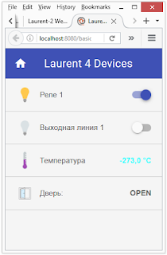

Управление реле Лоран через систему автоматизации умного дома OpenHab
Решил я начать с описания того, как управлять модулем Лоран в OpenHab. Будем считать что это в честь релиза OpenHab 2.
Я надеюсь, что это кому-то будет полезно, даже если и не для подключения Лорана, то просто как пример как это устроено, для того чтобы сделать что-то свое. Если будет интересно, буду еще писать про OpenHab, что я сам делал и с чем столкнулся
Итак, на данный момент работать это управление может только через http, и режим защиты модуля должен быть отключен. В принципе, можно слать команды и в tcp. Но как это сделать так, чтобы он сначала посылал пароль, а потом команду - я пока не знаю. У меня есть кое-какие идеи, но в лоб это сделать нельзя, поэтому отложим это на потом.
Я называл свой тестовый модуль Laurent 4, IP-адрес у него 192.168.0.104, http-команды соответствующие.
Должны быть установлены аддоны:
Я советую не копировать отсюда части кода, а брать их прямо из файлов примеров, потому как в коде есть треугольные скобки и тэги, и при их отображении может случиться какой-нибудь косяк.
Сначала создаем устройства. За них отвечают файлы в папке ПАПКА_OPENHAB\conf\items с расширением items.
Создадим файл Laurent4.items. Например, выключатель для реле 1 будет там выглядеть так:
Switch Laurent4Relay1 "Реле 1" <light> (gLaurent4, gSwitches) {http=">[ON:GET:http://192.168.0.104/cmd.cgi?cmd=REL,1,1] >[OFF:GET:http://192.168.0.104/cmd.cgi?cmd=REL,1,0]" }
Прочитать это можно следующим образом:
Выключатель с внутренним именем Laurent4Relay1 (имя может быть любое, но уникальное), с именем в интерфейсе Реле 1 (если потом не будет указано другое), с динамической картинкой, в начале названия которой слово light (не обязательно), входящий в группы gLaurent4 и gSwitches (не обязательно), использующий http, посылающий команду http://192.168.0.104/cmd.cgi?cmd=REL,1,1 при переводе в состояние ON и посылающий команду http://192.168.0.104/cmd.cgi?cmd=REL,1,0 при переводе в состояние OFF.
Соответственно, выходная линия будет выглядеть так:
Switch Laurent4Outline1 "Выходная линия 1" <light> (gLaurent4, gSwitches) {http=">[ON:GET:http://192.168.0.104/cmd.cgi?cmd=OUT,1,1] >[OFF:GET:http://192.168.0.104/cmd.cgi?cmd=OUT,1,0]" }
Датчик температуры также сделать очень легко и выглядеть он будет так:
Number Laurent4Temp "Температура [%.1f °C]" <temperature> (gLaurent4, gSensors) {http="<[http://192.168.0.104/state.xml:10000:REGEX(.*?<temp>(.*?)</temp>.*)]" }
Прочитать это можно следующим образом:
Числовое значение с внутренним именем Laurent4Temp (имя может быть любое, но уникальное), с именем в интерфейсе Температура (если потом не будет указано другое), с точностью один знак после запятой, после значения будет добавлено слово °C, с картинкой с названием temperature, входящее в группы gLaurent4 и gSensors (не обязательно), использующее http, что-то принимающее, находящееся по адресу http://192.168.0.104/state.xml, обновляющееся каждые 10000 милисекунд, извлекающее информацию из файла с помощью регулярного выражения, (не даваясь в подробности) нужное значение находится между словами <temp> и </temp>.
За отображение всех компоненентов отвечают файлы в папке ПАПКА_OPENHAB\conf\sitemaps с расширением sitemap.
Создадим файл Laurent4.sitemap.
И пишем там:
Switch item=Laurent4Relay1
Switch item=Laurent4Outline1
Text item=Laurent4Temp valuecolor=[ =="NULL" = "lightgray ", > 30 = "red", >= 27 ="yellow" , >= 23 = "green", < 23 = "aqua" ]
Тут я думаю все понятно, но только еще есть бонус в виде valuecolor, означающее следующее: если значения нет, цвет будет серым, если значение больше 30 - цвет будет красный, больше либо равно 27 - желтый, больше либо равно 23 - зеленый, меньше 23 - голубой.
В принципе это уже работоспособно. Но тут, к сожалению, нет обратной связи, а также нет информации со входных линий. Вот это уже сущственно сложнее, однако, мы продолжаем.
Добавляем в файл Laurent4.items следующие виртуальные устройства, которые нужны нам будут только для получения значений из Лорана:
String Laurent4RelayString "Laurent 4 Relay String: [%s]"{http="<[http://192.168.0.104/state.xml:6900:REGEX(.*?<rele>(.*?)</rele>.*)]" }
String Laurent4OutlineString "Laurent 4 Outline String: [%s]" {http="<[http://192.168.0.104/state.xml:7000:REGEX(.*?<out>(.*?)</out>.*)]" }
String Laurent4InlineString "Laurent 4 Inline String: [%s]" {http="<[http://192.168.0.104/state.xml:1000:REGEX(.*?<in>(.*?)</in>.*)]" }
Не буду вдаваться в подробности, это устроено аналогично получению температуры, смысл в том, что мы получаем строчки с актуальными состояниями наших реле, входных и выходных линий, состоящие из единиц и нулей, например 1001 для реле, когда включены первое и четвертое реле.
Теперь эти строки предстоит обработать, извлечь оттуда индивидуальные значения для элементов и назначить этим элементам. Делать это придется через правила.
Правила - это файлы в папке ПАПКА_OPENHAB\conf\rules с расширением rules.
Я не буду описывать здесь все что там происходит, я думаю, комментариев в файле будет достаточно.
Таким образом, советую скачать тестовые файлы, которые нужно поместить в соответсвующие папки.
Кроме того, желательно поместить в нужную папку также и следующие иконки:
(Формат svg используется по умолчанию, можно в настройках указать png)
Папка для иконок такая: ПАПКА_OPENHAB\conf\icons\classic
Взять их можно здесь, например: https://github.com/eclipse/smarthome/tree/master/extensions/ui/iconset/org.eclipse.smarthome.ui.iconset.classic
Чтобы подключиться к интерфейсу, в браузере вводим его адрес. У меня, например, http://localhost:8080/basicui/app?sitemap=Laurent4

Да, да, выглядит немного страшновато, но мы сейчас не о том. Интерфейс можно сделать любой, использовать любые иконки (из Fibaro, например), подключить ImperiHome, сделать HabPanel и т.д.
Главное - все работает!
Ссылка на файлы: https://drive.google.com/file/d/0B6bs8cRm74Rlc053ZlBkbEM4UHM/